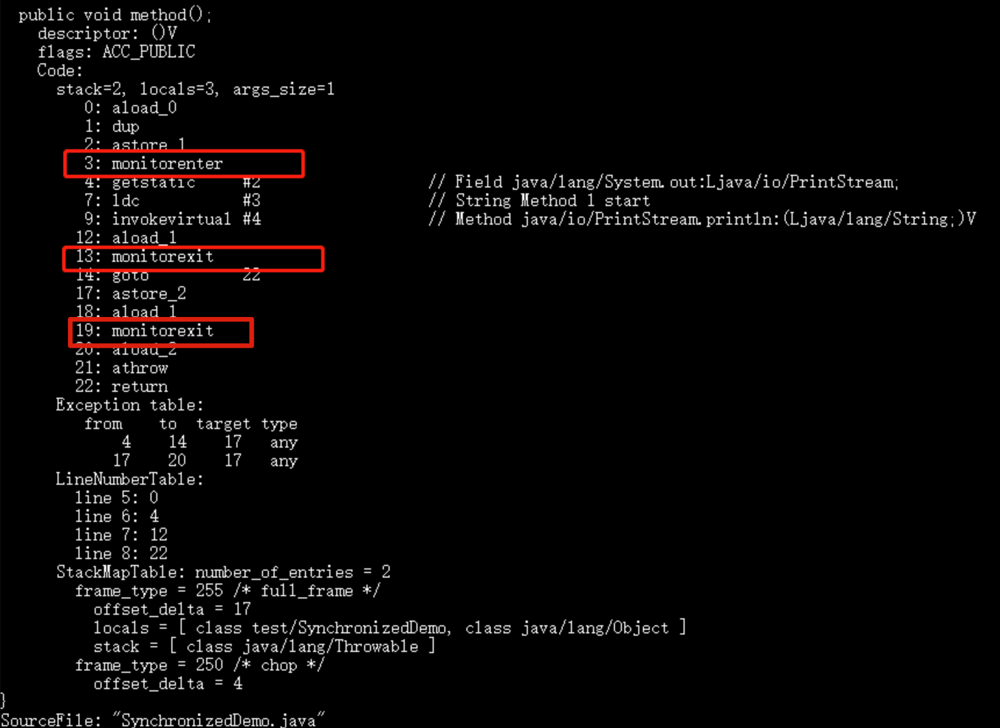
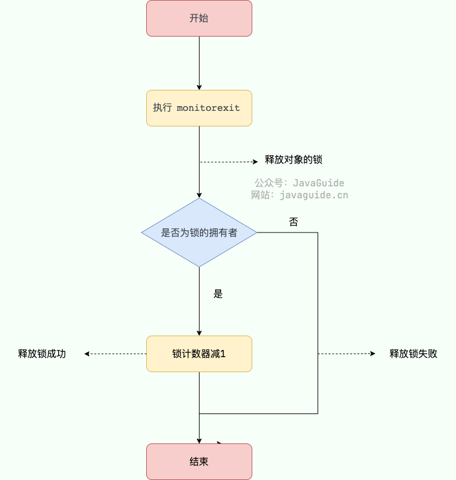
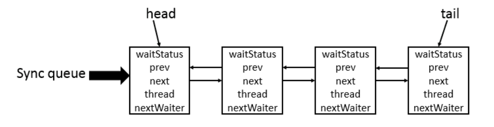

什么是线程和进程?
进程
进程是程序的一次执行过程，是系统运行程序的基本单位，因此进程是动态的。系统运行一个程序即是一个进程从创建，运行到消亡的过程。
在 Java 中，当我们启动 main 函数时其实就是启动了一个 JVM 的进程，而 main 函数所在的线程就是这个进程中的一个线程，也称主线程。
如下图所示，在 Windows 中通过查看任务管理器的方式，我们就可以清楚看到 Windows 当前运行的进程（.exe 文件的运行）。
线程
线程与进程相似，但线程是一个比进程更小的执行单位。一个进程在其执行的过程中可以产生多个线程。与进程不同的是同类的多个线程共享进程的堆和方法区资源，但每个线程有自己的程序计数器、虚拟机栈和本地方法栈，所以系统在产生一个线程，或是在各个线程之间作切换工作时，负担要比进程小得多，也正因为如此，线程也被称为轻量级进程。
Java 程序天生就是多线程程序，我们可以通过 JMX 来看看一个普通的 Java 程序有哪些线程，代码如下。
|
|
上述程序输出如下（输出内容可能不同，不用太纠结下面每个线程的作用，只用知道 main 线程执行 main 方法即可）：
|
|
从上面的输出内容可以看出：一个 Java 程序的运行是 main 线程和多个其他线程同时运行。
从 JVM 角度说进程和线程之间的关系
下图是 Java 内存区域，通过下图我们从 JVM 的角度来说一下线程和进程之间的关系。

从上图可以看出：一个进程中可以有多个线程，多个线程共享进程的堆和**方法区 (JDK1.8 之后的元空间)*资源，但是每个线程有自己的*程序计数器、虚拟机栈 和 本地方法栈。
总结： 线程是进程划分成的更小的运行单位。线程和进程最大的不同在于基本上各进程是独立的，而各线程则不一定，因为同一进程中的线程极有可能会相互影响。线程执行开销小，但不利于资源的管理和保护；而进程正相反。
程序计数器为什么是私有的?
程序计数器主要有下面两个作用：
- 字节码解释器通过改变程序计数器来依次读取指令，从而实现代码的流程控制，如：顺序执行、选择、循环、异常处理。
- 在多线程的情况下，程序计数器用于记录当前线程执行的位置，从而当线程被切换回来的时候能够知道该线程上次运行到哪儿了。
需要注意的是，如果执行的是 native 方法，那么程序计数器记录的是 undefined 地址，只有执行的是 Java 代码时程序计数器记录的才是下一条指令的地址。
所以，程序计数器私有主要是为了线程切换后能恢复到正确的执行位置。
虚拟机栈和本地方法栈为什么是私有的?
- 虚拟机栈： 每个 Java 方法在执行之前会创建一个栈帧用于存储局部变量表、操作数栈、常量池引用等信息。从方法调用直至执行完成的过程，就对应着一个栈帧在 Java 虚拟机栈中入栈和出栈的过程。
- 本地方法栈： 和虚拟机栈所发挥的作用非常相似，区别是：虚拟机栈为虚拟机执行 Java 方法 （也就是字节码）服务，而本地方法栈则为虚拟机使用到的 Native 方法服务。 在 HotSpot 虚拟机中和 Java 虚拟机栈合二为一。
所以，为了保证线程中的局部变量不被别的线程访问到，虚拟机栈和本地方法栈是线程私有的。
一句话简单了解堆和方法区
堆和方法区是所有线程共享的资源，其中堆是进程中最大的一块内存，主要用于存放新创建的对象 (几乎所有对象都在这里分配内存)，方法区主要用于存放已被加载的类信息、常量、静态变量、即时编译器编译后的代码等数据。
并发与并行的区别
- 并发：两个及两个以上的作业在同一 时间段 内执行。
- 并行：两个及两个以上的作业在同一 时刻 执行。
最关键的点是：是否是 同时 执行。
同步和异步的区别
- 同步：发出一个调用之后，在没有得到结果之前， 该调用就不可以返回，一直等待。
- 异步：调用在发出之后，不用等待返回结果，该调用直接返回。
为什么要使用多线程?
先从总体上来说：
- 从计算机底层来说： 线程可以比作是轻量级的进程，是程序执行的最小单位,线程间的切换和调度的成本远远小于进程。另外，多核 CPU 时代意味着多个线程可以同时运行，这减少了线程上下文切换的开销。
- 从当代互联网发展趋势来说： 现在的系统动不动就要求百万级甚至千万级的并发量，而多线程并发编程正是开发高并发系统的基础，利用好多线程机制可以大大提高系统整体的并发能力以及性能。
再深入到计算机底层来探讨：
- 单核时代：在单核时代多线程主要是为了提高单进程利用 CPU 和 IO 系统的效率。 假设只运行了一个 Java 进程的情况，当我们请求 IO 的时候，如果 Java 进程中只有一个线程，此线程被 IO 阻塞则整个进程被阻塞。CPU 和 IO 设备只有一个在运行，那么可以简单地说系统整体效率只有 50%。当使用多线程的时候，一个线程被 IO 阻塞，其他线程还可以继续使用 CPU。从而提高了 Java 进程利用系统资源的整体效率。
- 多核时代: 多核时代多线程主要是为了提高进程利用多核 CPU 的能力。举个例子：假如我们要计算一个复杂的任务，我们只用一个线程的话，不论系统有几个 CPU 核心，都只会有一个 CPU 核心被利用到。而创建多个线程，这些线程可以被映射到底层多个 CPU 上执行，在任务中的多个线程没有资源竞争的情况下，任务执行的效率会有显著性的提高，约等于（单核时执行时间/CPU 核心数）。
使用多线程可能带来什么问题?
并发编程的目的就是为了能提高程序的执行效率提高程序运行速度，但是并发编程并不总是能提高程序运行速度的，而且并发编程可能会遇到很多问题，比如：内存泄漏、死锁、线程不安全等等。
如何理解线程安全和不安全？
线程安全和不安全是在多线程环境下对于同一份数据的访问是否能够保证其正确性和一致性的描述。
- 线程安全指的是在多线程环境下，对于同一份数据，不管有多少个线程同时访问，都能保证这份数据的正确性和一致性。
- 线程不安全则表示在多线程环境下，对于同一份数据，多个线程同时访问时可能会导致数据混乱、错误或者丢失。
说说线程的生命周期和状态?
Java 线程在运行的生命周期中的指定时刻只可能处于下面 6 种不同状态的其中一个状态：
- NEW：初始状态，线程被创建出来但没有被调用
start()。 - RUNNABLE：运行状态，线程被调用了
start()等待运行的状态。 - BLOCKED：阻塞状态，需要等待锁释放。
- WAITING：等待状态，表示该线程需要等待其他线程做出一些特定动作（通知或中断）。
- TIME_WAITING：超时等待状态，可以在指定的时间后自行返回而不是像 WAITING 那样一直等待。
- TERMINATED：终止状态，表示该线程已经运行完毕。
线程在生命周期中并不是固定处于某一个状态而是随着代码的执行在不同状态之间切换。

由上图可以看出：线程创建之后它将处于 NEW（新建） 状态，调用 start() 方法后开始运行，线程这时候处于 READY（可运行） 状态。可运行状态的线程获得了 CPU 时间片（timeslice）后就处于 RUNNING（运行） 状态。
在操作系统层面，线程有 READY 和 RUNNING 状态；而在 JVM 层面，只能看到 RUNNABLE 状态（图源：HowToDoInJava：Java Thread Life Cycle and Thread States），所以 Java 系统一般将这两个状态统称为 RUNNABLE（运行中） 状态 。
为什么 JVM 没有区分这两种状态呢？ （摘自：Java 线程运行怎么有第六种状态？ - Dawell 的回答 ） 现在的时分（time-sharing）多任务（multi-task）操作系统架构通常都是用所谓的“时间分片（time quantum or time slice）”方式进行抢占式（preemptive）轮转调度（round-robin 式）。这个时间分片通常是很小的，一个线程一次最多只能在 CPU 上运行比如 10-20ms 的时间（此时处于 running 状态），也即大概只有 0.01 秒这一量级，时间片用后就要被切换下来放入调度队列的末尾等待再次调度。（也即回到 ready 状态）。线程切换的如此之快，区分这两种状态就没什么意义了。
当线程执行 wait()方法之后，线程进入 WAITING（等待） 状态。进入等待状态的线程需要依靠其他线程的通知才能够返回到运行状态。
TIMED_WAITING(超时等待) 状态相当于在等待状态的基础上增加了超时限制，比如通过 sleep（long millis）方法或 wait（long millis）方法可以将线程置于 TIMED_WAITING 状态。当超时时间结束后，线程将会返回到 RUNNABLE 状态。
当线程进入 synchronized 方法/块或者调用 wait 后（被 notify）重新进入 synchronized 方法/块，但是锁被其它线程占有，这个时候线程就会进入 BLOCKED（阻塞） 状态。
线程在执行完了 run()方法之后将会进入到 TERMINATED（终止） 状态。
什么是线程上下文切换?
线程在执行过程中会有自己的运行条件和状态（也称上下文），比如上文所说到过的程序计数器，栈信息等。当出现如下情况的时候，线程会从占用 CPU 状态中退出。
- 主动让出 CPU，比如调用了
sleep(),wait()等。 - 时间片用完，因为操作系统要防止一个线程或者进程长时间占用 CPU 导致其他线程或者进程饿死。
- 调用了阻塞类型的系统中断，比如请求 IO，线程被阻塞。
- 被终止或结束运行
这其中前三种都会发生线程切换，线程切换意味着需要保存当前线程的上下文，留待线程下次占用 CPU 的时候恢复现场。并加载下一个将要占用 CPU 的线程上下文。这就是所谓的 上下文切换。
上下文切换是现代操作系统的基本功能，因其每次需要保存信息恢复信息，这将会占用 CPU，内存等系统资源进行处理，也就意味着效率会有一定损耗，如果频繁切换就会造成整体效率低下。
什么是线程死锁?如何避免死锁?
线程死锁描述的是这样一种情况：多个线程同时被阻塞，它们中的一个或者全部都在等待某个资源被释放。由于线程被无限期地阻塞，因此程序不可能正常终止。
如下图所示，线程 A 持有资源 2，线程 B 持有资源 1，他们同时都想申请对方的资源，所以这两个线程就会互相等待而进入死锁状态。

下面通过一个例子来说明线程死锁,代码模拟了上图的死锁的情况 (代码来源于《并发编程之美》)：
|
|
线程 A 通过 synchronized (resource1) 获得 resource1 的监视器锁，然后通过Thread.sleep(1000);让线程 A 休眠 1s 为的是让线程 B 得到执行然后获取到 resource2 的监视器锁。线程 A 和线程 B 休眠结束了都开始企图请求获取对方的资源，然后这两个线程就会陷入互相等待的状态，这也就产生了死锁。
上面的例子符合产生死锁的四个必要条件：
- 互斥条件：该资源任意一个时刻只由一个线程占用。
- 请求与保持条件：一个线程因请求资源而阻塞时，对已获得的资源保持不放。
- 不剥夺条件:线程已获得的资源在未使用完之前不能被其他线程强行剥夺，只有自己使用完毕后才释放资源。
- 循环等待条件:若干线程之间形成一种头尾相接的循环等待资源关系。
如何预防和避免线程死锁?
如何预防死锁？ 破坏死锁的产生的必要条件即可：
- 破坏请求与保持条件：一次性申请所有的资源。
- 破坏不剥夺条件：占用部分资源的线程进一步申请其他资源时，如果申请不到，可以主动释放它占有的资源。
- 破坏循环等待条件：靠按序申请资源来预防。按某一顺序申请资源，释放资源则反序释放。破坏循环等待条件。
如何避免死锁？
避免死锁就是在资源分配时，借助于算法（比如银行家算法）对资源分配进行计算评估，使其进入安全状态。
安全状态 指的是系统能够按照某种线程推进顺序（P1、P2、P3…..Pn）来为每个线程分配所需资源，直到满足每个线程对资源的最大需求，使每个线程都可顺利完成。称
<P1、P2、P3.....Pn>序列为安全序列。
我们对线程 2 的代码修改成下面这样就不会产生死锁了。
|
|
输出：
|
|
我们分析一下上面的代码为什么避免了死锁的发生?
线程 1 首先获得到 resource1 的监视器锁，这时候线程 2 就获取不到了。然后线程 1 再去获取 resource2 的监视器锁，可以获取到。然后线程 1 释放了对 resource1、resource2 的监视器锁的占用，线程 2 获取到就可以执行了。这样就破坏了破坏循环等待条件，因此避免了死锁。
sleep() 方法和 wait() 方法对比
共同点：两者都可以暂停线程的执行。
区别：
sleep()方法没有释放锁，而wait()方法释放了锁 。wait()通常被用于线程间交互/通信，sleep()通常被用于暂停执行。wait()方法被调用后，线程不会自动苏醒，需要别的线程调用同一个对象上的notify()或者notifyAll()方法。sleep()方法执行完成后，线程会自动苏醒，或者也可以使用wait(long timeout)超时后线程会自动苏醒。sleep()是Thread类的静态本地方法，wait()则是Object类的本地方法。为什么这样设计呢？
为什么 wait() 方法不定义在 Thread 中？
wait() 是让获得对象锁的线程实现等待，会自动释放当前线程占有的对象锁。每个对象（Object）都拥有对象锁，既然要释放当前线程占有的对象锁并让其进入 WAITING 状态，自然是要操作对应的对象（Object）而非当前的线程（Thread）。
类似的问题：为什么 sleep() 方法定义在 Thread 中？
因为 sleep() 是让当前线程暂停执行，不涉及到对象类，也不需要获得对象锁。
可以直接调用 Thread 类的 run 方法吗？
这是另一个非常经典的 Java 多线程面试问题，而且在面试中会经常被问到。很简单，但是很多人都会答不上来！
new 一个 Thread，线程进入了新建状态。调用 start()方法，会启动一个线程并使线程进入了就绪状态，当分配到时间片后就可以开始运行了。 start() 会执行线程的相应准备工作，然后自动执行 run() 方法的内容，这是真正的多线程工作。 但是，直接执行 run() 方法，会把 run() 方法当成一个 main 线程下的普通方法去执行，并不会在某个线程中执行它，所以这并不是多线程工作。
总结：调用 start() 方法方可启动线程并使线程进入就绪状态，直接执行 run() 方法的话不会以多线程的方式执行。
volatile 关键字
如何保证变量的可见性？
在 Java 中，volatile 关键字可以保证变量的可见性，如果我们将变量声明为 volatile ，这就指示 JVM，这个变量是共享且不稳定的，每次使用它都到主存中进行读取。


volatile 关键字其实并非是 Java 语言特有的，在 C 语言里也有，它最原始的意义就是禁用 CPU 缓存。如果我们将一个变量使用 volatile 修饰，这就指示 编译器，这个变量是共享且不稳定的，每次使用它都到主存中进行读取。
volatile 关键字能保证数据的可见性，但不能保证数据的原子性。synchronized 关键字两者都能保证。
如何禁止指令重排序？
在 Java 中，volatile 关键字除了可以保证变量的可见性，还有一个重要的作用就是防止 JVM 的指令重排序。 如果我们将变量声明为 volatile ，在对这个变量进行读写操作的时候，会通过插入特定的 内存屏障 的方式来禁止指令重排序。
在 Java 中，Unsafe 类提供了三个开箱即用的内存屏障相关的方法，屏蔽了操作系统底层的差异：
|
|
理论上来说，你通过这个三个方法也可以实现和volatile禁止重排序一样的效果，只是会麻烦一些。
下面我以一个常见的面试题为例讲解一下 volatile 关键字禁止指令重排序的效果。
面试中面试官经常会说：“单例模式了解吗？来给我手写一下！给我解释一下双重检验锁方式实现单例模式的原理呗！”
双重校验锁实现对象单例（线程安全）：
|
|
uniqueInstance 采用 volatile 关键字修饰也是很有必要的， uniqueInstance = new Singleton(); 这段代码其实是分为三步执行：
- 为
uniqueInstance分配内存空间 - 初始化
uniqueInstance - 将
uniqueInstance指向分配的内存地址
但是由于 JVM 具有指令重排的特性，执行顺序有可能变成 1->3->2。指令重排在单线程环境下不会出现问题，但是在多线程环境下会导致一个线程获得还没有初始化的实例。例如，线程 T1 执行了 1 和 3，此时 T2 调用 getUniqueInstance() 后发现 uniqueInstance 不为空，因此返回 uniqueInstance，但此时 uniqueInstance 还未被初始化。
volatile 可以保证原子性么？
volatile 关键字能保证变量的可见性，但不能保证对变量的操作是原子性的。
我们通过下面的代码即可证明：
|
|
正常情况下，运行上面的代码理应输出 2500。但你真正运行了上面的代码之后，你会发现每次输出结果都小于 2500。
为什么会出现这种情况呢？不是说好了，volatile 可以保证变量的可见性嘛！
也就是说，如果 volatile 能保证 inc++ 操作的原子性的话。每个线程中对 inc 变量自增完之后，其他线程可以立即看到修改后的值。5 个线程分别进行了 500 次操作，那么最终 inc 的值应该是 5*500=2500。
很多人会误认为自增操作 inc++ 是原子性的，实际上，inc++ 其实是一个复合操作，包括三步：
- 读取 inc 的值。
- 对 inc 加 1。
- 将 inc 的值写回内存。
volatile 是无法保证这三个操作是具有原子性的，有可能导致下面这种情况出现：
- 线程 1 对
inc进行读取操作之后，还未对其进行修改。线程 2 又读取了inc的值并对其进行修改（+1），再将inc的值写回内存。 - 线程 2 操作完毕后，线程 1 对
inc的值进行修改（+1），再将inc的值写回内存。
这也就导致两个线程分别对 inc 进行了一次自增操作后，inc 实际上只增加了 1。
其实，如果想要保证上面的代码运行正确也非常简单，利用 synchronized、Lock或者AtomicInteger都可以。
使用 synchronized 改进：
|
|
使用 AtomicInteger 改进：
|
|
使用 ReentrantLock 改进：
|
|
乐观锁和悲观锁
什么是悲观锁
悲观锁总是假设最坏的情况，认为共享资源每次被访问的时候就会出现问题(比如共享数据被修改)，所以每次在获取资源操作的时候都会上锁，这样其他线程想拿到这个资源就会阻塞直到锁被上一个持有者释放。也就是说，共享资源每次只给一个线程使用，其它线程阻塞，用完后再把资源转让给其它线程。
像 Java 中synchronized和ReentrantLock等独占锁就是悲观锁思想的实现。
|
|
高并发的场景下，激烈的锁竞争会造成线程阻塞，大量阻塞线程会导致系统的上下文切换，增加系统的性能开销。并且，悲观锁还可能会存在死锁问题，影响代码的正常运行。
什么是乐观锁
乐观锁总是假设最好的情况，认为共享资源每次被访问的时候不会出现问题，线程可以不停地执行，无需加锁也无需等待，只是在提交修改的时候去验证对应的资源（也就是数据）是否被其它线程修改了（具体方法可以使用版本号机制或 CAS 算法）。
在 Java 中java.util.concurrent.atomic包下面的原子变量类（比如AtomicInteger、LongAdder）就是使用了乐观锁的一种实现方式 CAS 实现的。
|
|
高并发的场景下，乐观锁相比悲观锁来说，不存在锁竞争造成线程阻塞，也不会有死锁的问题，在性能上往往会更胜一筹。但是，如果冲突频繁发生（写占比非常多的情况），会频繁失败和重试，这样同样会非常影响性能，导致 CPU 飙升。
不过，大量失败重试的问题也是可以解决的，像我们前面提到的 LongAdder以空间换时间的方式就解决了这个问题。
理论上来说：
- 悲观锁通常多用于写比较多的情况下（多写场景，竞争激烈），这样可以避免频繁失败和重试影响性能，悲观锁的开销是固定的。不过，如果乐观锁解决了频繁失败和重试这个问题的话（比如
LongAdder），也是可以考虑使用乐观锁的，要视实际情况而定。 - 乐观锁通常多于写比较少的情况下（多读场景，竞争较少），这样可以避免频繁加锁影响性能。不过，乐观锁主要针对的对象是单个共享变量（参考
java.util.concurrent.atomic包下面的原子变量类）。
如何实现乐观锁？
乐观锁一般会使用版本号机制或 CAS 算法实现，CAS 算法相对来说更多一些，这里需要格外注意。
版本号机制
一般是在数据表中加上一个数据版本号 version 字段，表示数据被修改的次数。当数据被修改时，version 值会加一。当线程 A 要更新数据值时，在读取数据的同时也会读取 version 值，在提交更新时，若刚才读取到的 version 值为当前数据库中的 version 值相等时才更新，否则重试更新操作，直到更新成功。
举一个简单的例子：假设数据库中帐户信息表中有一个 version 字段，当前值为 1 ；而当前帐户余额字段（ balance ）为 $100 。
- 操作员 A 此时将其读出（
version=1 ），并从其帐户余额中扣除 $50（ $100-$50 ）。 - 在操作员 A 操作的过程中，操作员 B 也读入此用户信息（
version=1 ），并从其帐户余额中扣除 $20 （ $100-$20 ）。 - 操作员 A 完成了修改工作，将数据版本号（
version=1 ），连同帐户扣除后余额（balance=$50 ），提交至数据库更新，此时由于提交数据版本等于数据库记录当前版本，数据被更新，数据库记录version更新为 2 。 - 操作员 B 完成了操作，也将版本号（
version=1 ）试图向数据库提交数据（balance=$80 ），但此时比对数据库记录版本时发现，操作员 B 提交的数据版本号为 1 ，数据库记录当前版本也为 2 ，不满足 “ 提交版本必须等于当前版本才能执行更新 “ 的乐观锁策略，因此，操作员 B 的提交被驳回。
这样就避免了操作员 B 用基于 version=1 的旧数据修改的结果覆盖操作员 A 的操作结果的可能。
CAS 算法
CAS 的全称是 Compare And Swap（比较与交换） ，用于实现乐观锁，被广泛应用于各大框架中。CAS 的思想很简单，就是用一个预期值和要更新的变量值进行比较，两值相等才会进行更新。
CAS 是一个原子操作，底层依赖于一条 CPU 的原子指令。
原子操作 即最小不可拆分的操作，也就是说操作一旦开始，就不能被打断，直到操作完成。
CAS 涉及到三个操作数：
- V：要更新的变量值(Var)
- E：预期值(Expected)
- N：拟写入的新值(New)
当且仅当 V 的值等于 E 时，CAS 通过原子方式用新值 N 来更新 V 的值。如果不等，说明已经有其它线程更新了 V，则当前线程放弃更新。
举一个简单的例子：线程 A 要修改变量 i 的值为 6，i 原值为 1（V = 1，E=1，N=6，假设不存在 ABA 问题）。
- i 与 1 进行比较，如果相等， 则说明没被其他线程修改，可以被设置为 6 。
- i 与 1 进行比较，如果不相等，则说明被其他线程修改，当前线程放弃更新，CAS 操作失败。
当多个线程同时使用 CAS 操作一个变量时，只有一个会胜出，并成功更新，其余均会失败，但失败的线程并不会被挂起，仅是被告知失败，并且允许再次尝试，当然也允许失败的线程放弃操作。
Java 语言并没有直接实现 CAS，CAS 相关的实现是通过 C++ 内联汇编的形式实现的（JNI 调用）。因此， CAS 的具体实现和操作系统以及 CPU 都有关系。
sun.misc包下的Unsafe类提供了compareAndSwapObject、compareAndSwapInt、compareAndSwapLong方法来实现的对Object、int、long类型的 CAS 操作
|
|
关于 Unsafe 类的详细介绍可以看这篇文章：Java 魔法类 Unsafe 详解 - JavaGuide - 2022
乐观锁存在哪些问题？
ABA 问题是乐观锁最常见的问题。
ABA 问题
如果一个变量 V 初次读取的时候是 A 值，并且在准备赋值的时候检查到它仍然是 A 值，那我们就能说明它的值没有被其他线程修改过了吗？很明显是不能的，因为在这段时间它的值可能被改为其他值，然后又改回 A，那 CAS 操作就会误认为它从来没有被修改过。这个问题被称为 CAS 操作的 “ABA"问题。
ABA 问题的解决思路是在变量前面追加上版本号或者时间戳。JDK 1.5 以后的 AtomicStampedReference 类就是用来解决 ABA 问题的，其中的 compareAndSet() 方法就是首先检查当前引用是否等于预期引用，并且当前标志是否等于预期标志，如果全部相等，则以原子方式将该引用和该标志的值设置为给定的更新值。
|
|
循环时间长开销大
CAS 经常会用到自旋操作来进行重试，也就是不成功就一直循环执行直到成功。如果长时间不成功，会给 CPU 带来非常大的执行开销。
如果 JVM 能支持处理器提供的 pause 指令那么效率会有一定的提升，pause 指令有两个作用：
- 可以延迟流水线执行指令，使 CPU 不会消耗过多的执行资源，延迟的时间取决于具体实现的版本，在一些处理器上延迟时间是零。
- 可以避免在退出循环的时候因内存顺序冲而引起 CPU 流水线被清空，从而提高 CPU 的执行效率。
只能保证一个共享变量的原子操作
CAS 只对单个共享变量有效，当操作涉及跨多个共享变量时 CAS 无效。但是从 JDK 1.5 开始，提供了AtomicReference类来保证引用对象之间的原子性，你可以把多个变量放在一个对象里来进行 CAS 操作.所以我们可以使用锁或者利用AtomicReference类把多个共享变量合并成一个共享变量来操作。
synchronized 关键字
synchronized 是什么？有什么用？
synchronized 是 Java 中的一个关键字，翻译成中文是同步的意思，主要解决的是多个线程之间访问资源的同步性，可以保证被它修饰的方法或者代码块在任意时刻只能有一个线程执行。
在 Java 早期版本中，synchronized 属于 重量级锁，效率低下。这是因为监视器锁（monitor）是依赖于底层的操作系统的 Mutex Lock 来实现的，Java 的线程是映射到操作系统的原生线程之上的。如果要挂起或者唤醒一个线程，都需要操作系统帮忙完成，而操作系统实现线程之间的切换时需要从用户态转换到内核态，这个状态之间的转换需要相对比较长的时间，时间成本相对较高。
不过，在 Java 6 之后， synchronized 引入了大量的优化如自旋锁、适应性自旋锁、锁消除、锁粗化、偏向锁、轻量级锁等技术来减少锁操作的开销，这些优化让 synchronized 锁的效率提升了很多。因此， synchronized 还是可以在实际项目中使用的，像 JDK 源码、很多开源框架都大量使用了 synchronized 。
如何使用 synchronized？
synchronized 关键字的使用方式主要有下面 3 种：
- 修饰实例方法
- 修饰静态方法
- 修饰代码块
1、修饰实例方法 （锁当前对象实例）
给当前对象实例加锁，进入同步代码前要获得 当前对象实例的锁 。
|
|
2、修饰静态方法 （锁当前类）
给当前类加锁，会作用于类的所有对象实例 ，进入同步代码前要获得 当前 class 的锁。
这是因为静态成员不属于任何一个实例对象，归整个类所有，不依赖于类的特定实例，被类的所有实例共享。
|
|
静态 synchronized 方法和非静态 synchronized 方法之间的调用互斥么？不互斥！如果一个线程 A 调用一个实例对象的非静态 synchronized 方法，而线程 B 需要调用这个实例对象所属类的静态 synchronized 方法，是允许的，不会发生互斥现象，因为访问静态 synchronized 方法占用的锁是当前类的锁，而访问非静态 synchronized 方法占用的锁是当前实例对象锁。
3、修饰代码块 （锁指定对象/类）
对括号里指定的对象/类加锁：
synchronized(object)表示进入同步代码库前要获得 给定对象的锁。synchronized(类.class)表示进入同步代码前要获得 给定 Class 的锁
|
|
总结：
synchronized关键字加到static静态方法和synchronized(class)代码块上都是是给 Class 类上锁；synchronized关键字加到实例方法上是给对象实例上锁；- 尽量不要使用
synchronized(String a)因为 JVM 中，字符串常量池具有缓存功能。
构造方法可以用 synchronized 修饰么？
构造方法不能使用 synchronized 关键字修饰。
构造方法本身就属于线程安全的，不存在同步的构造方法一说。
synchronized 底层原理了解吗？
synchronized 关键字底层原理属于 JVM 层面的东西。
synchronized 同步语句块的情况
|
|
通过 JDK 自带的 javap 命令查看 SynchronizedDemo 类的相关字节码信息：首先切换到类的对应目录执行 javac SynchronizedDemo.java 命令生成编译后的 .class 文件，然后执行javap -c -s -v -l SynchronizedDemo.class。

从上面我们可以看出：synchronized 同步语句块的实现使用的是 monitorenter 和 monitorexit 指令，其中 monitorenter 指令指向同步代码块的开始位置，monitorexit 指令则指明同步代码块的结束位置。
上面的字节码中包含一个 monitorenter 指令以及两个 monitorexit 指令，这是为了保证锁在同步代码块代码正常执行以及出现异常的这两种情况下都能被正确释放。
当执行 monitorenter 指令时，线程试图获取锁也就是获取 对象监视器 monitor 的持有权。
在 Java 虚拟机(HotSpot)中，Monitor 是基于 C++实现的，由ObjectMonitor实现的。每个对象中都内置了一个
ObjectMonitor对象。另外，
wait/notify等方法也依赖于monitor对象，这就是为什么只有在同步的块或者方法中才能调用wait/notify等方法，否则会抛出java.lang.IllegalMonitorStateException的异常的原因。
在执行monitorenter时，会尝试获取对象的锁，如果锁的计数器为 0 则表示锁可以被获取，获取后将锁计数器设为 1 也就是加 1。

对象锁的的拥有者线程才可以执行 monitorexit 指令来释放锁。在执行 monitorexit 指令后，将锁计数器设为 0，表明锁被释放，其他线程可以尝试获取锁。

如果获取对象锁失败，那当前线程就要阻塞等待，直到锁被另外一个线程释放为止。
synchronized 修饰方法的的情况
|
|

synchronized 修饰的方法并没有 monitorenter 指令和 monitorexit 指令，取得代之的确实是 ACC_SYNCHRONIZED 标识，该标识指明了该方法是一个同步方法。JVM 通过该 ACC_SYNCHRONIZED 访问标志来辨别一个方法是否声明为同步方法，从而执行相应的同步调用。
如果是实例方法，JVM 会尝试获取实例对象的锁。如果是静态方法，JVM 会尝试获取当前 class 的锁。
总结
synchronized 同步语句块的实现使用的是 monitorenter 和 monitorexit 指令，其中 monitorenter 指令指向同步代码块的开始位置，monitorexit 指令则指明同步代码块的结束位置。
synchronized 修饰的方法并没有 monitorenter 指令和 monitorexit 指令，取得代之的确实是 ACC_SYNCHRONIZED 标识，该标识指明了该方法是一个同步方法。
不过两者的本质都是对对象监视器 monitor 的获取。
相关推荐：Java 锁与线程的那些事 - 有赞技术团队 。
JDK1.6 之后的 synchronized 底层做了哪些优化？
JDK1.6 对锁的实现引入了大量的优化，如偏向锁、轻量级锁、自旋锁、适应性自旋锁、锁消除、锁粗化等技术来减少锁操作的开销。
锁主要存在四种状态，依次是：无锁状态、偏向锁状态、轻量级锁状态、重量级锁状态，他们会随着竞争的激烈而逐渐升级。注意锁可以升级不可降级，这种策略是为了提高获得锁和释放锁的效率。
关于这几种优化的详细信息可以查看下面这篇文章：Java6 及以上版本对 synchronized 的优化
synchronized 和 volatile 有什么区别？
synchronized 关键字和 volatile 关键字是两个互补的存在，而不是对立的存在！
volatile关键字是线程同步的轻量级实现，所以volatile性能肯定比synchronized关键字要好 。但是volatile关键字只能用于变量而synchronized关键字可以修饰方法以及代码块 。volatile关键字能保证数据的可见性，但不能保证数据的原子性。synchronized关键字两者都能保证。volatile关键字主要用于解决变量在多个线程之间的可见性，而synchronized关键字解决的是多个线程之间访问资源的同步性。
ReentrantLock
ReentrantLock 是什么？
ReentrantLock 实现了 Lock 接口，是一个可重入且独占式的锁，和 synchronized 关键字类似。不过，ReentrantLock 更灵活、更强大，增加了轮询、超时、中断、公平锁和非公平锁等高级功能。
|
|
ReentrantLock 里面有一个内部类 Sync，Sync 继承 AQS（AbstractQueuedSynchronizer），添加锁和释放锁的大部分操作实际上都是在 Sync 中实现的。Sync 有公平锁 FairSync 和非公平锁 NonfairSync 两个子类。

ReentrantLock 默认使用非公平锁，也可以通过构造器来显式的指定使用公平锁。
|
|
从上面的内容可以看出， ReentrantLock 的底层就是由 AQS 来实现的。关于 AQS 的相关内容推荐阅读 AQS 详解 这篇文章。
公平锁和非公平锁有什么区别？
- 公平锁 : 锁被释放之后，先申请的线程先得到锁。性能较差一些，因为公平锁为了保证时间上的绝对顺序，上下文切换更频繁。
- 非公平锁：锁被释放之后，后申请的线程可能会先获取到锁，是随机或者按照其他优先级排序的。性能更好，但可能会导致某些线程永远无法获取到锁。
synchronized 和 ReentrantLock 有什么区别？
两者都是可重入锁
可重入锁 也叫递归锁，指的是线程可以再次获取自己的内部锁。比如一个线程获得了某个对象的锁，此时这个对象锁还没有释放，当其再次想要获取这个对象的锁的时候还是可以获取的，如果是不可重入锁的话，就会造成死锁。
JDK 提供的所有现成的 Lock 实现类，包括 synchronized 关键字锁都是可重入的。
在下面的代码中，method1() 和 method2()都被 synchronized 关键字修饰，method1()调用了method2()。
|
|
由于 synchronized锁是可重入的，同一个线程在调用method1() 时可以直接获得当前对象的锁，执行 method2() 的时候可以再次获取这个对象的锁，不会产生死锁问题。假如synchronized是不可重入锁的话，由于该对象的锁已被当前线程所持有且无法释放，这就导致线程在执行 method2()时获取锁失败，会出现死锁问题。
synchronized 依赖于 JVM 而 ReentrantLock 依赖于 API
synchronized 是依赖于 JVM 实现的，前面我们也讲到了 虚拟机团队在 JDK1.6 为 synchronized 关键字进行了很多优化，但是这些优化都是在虚拟机层面实现的，并没有直接暴露给我们。
ReentrantLock 是 JDK 层面实现的（也就是 API 层面，需要 lock() 和 unlock() 方法配合 try/finally 语句块来完成），所以我们可以通过查看它的源代码，来看它是如何实现的。
ReentrantLock 比 synchronized 增加了一些高级功能
相比synchronized，ReentrantLock增加了一些高级功能。主要来说主要有三点：
- 等待可中断 :
ReentrantLock提供了一种能够中断等待锁的线程的机制，通过lock.lockInterruptibly()来实现这个机制。也就是说正在等待的线程可以选择放弃等待，改为处理其他事情。 - 可实现公平锁 :
ReentrantLock可以指定是公平锁还是非公平锁。而synchronized只能是非公平锁。所谓的公平锁就是先等待的线程先获得锁。ReentrantLock默认情况是非公平的，可以通过ReentrantLock类的ReentrantLock(boolean fair)构造方法来制定是否是公平的。 - 可实现选择性通知（锁可以绑定多个条件）:
synchronized关键字与wait()和notify()/notifyAll()方法相结合可以实现等待/通知机制。ReentrantLock类当然也可以实现，但是需要借助于Condition接口与newCondition()方法。
如果你想使用上述功能，那么选择 ReentrantLock 是一个不错的选择。
关于 Condition接口的补充：
Condition是 JDK1.5 之后才有的，它具有很好的灵活性，比如可以实现多路通知功能也就是在一个Lock对象中可以创建多个Condition实例（即对象监视器），线程对象可以注册在指定的Condition中，从而可以有选择性的进行线程通知，在调度线程上更加灵活。 在使用notify()/notifyAll()方法进行通知时，被通知的线程是由 JVM 选择的，用ReentrantLock类结合Condition实例可以实现“选择性通知” ，这个功能非常重要，而且是Condition接口默认提供的。而synchronized关键字就相当于整个Lock对象中只有一个Condition实例，所有的线程都注册在它一个身上。如果执行notifyAll()方法的话就会通知所有处于等待状态的线程，这样会造成很大的效率问题。而Condition实例的signalAll()方法，只会唤醒注册在该Condition实例中的所有等待线程。
可中断锁和不可中断锁有什么区别？
- 可中断锁：获取锁的过程中可以被中断，不需要一直等到获取锁之后 才能进行其他逻辑处理。
ReentrantLock就属于是可中断锁。 - 不可中断锁：一旦线程申请了锁，就只能等到拿到锁以后才能进行其他的逻辑处理。
synchronized就属于是不可中断锁。
ReentrantReadWriteLock
ReentrantReadWriteLock 在实际项目中使用的并不多，面试中也问的比较少，简单了解即可。JDK 1.8 引入了性能更好的读写锁 StampedLock 。
ReentrantReadWriteLock 是什么？
ReentrantReadWriteLock 实现了 ReadWriteLock ，是一个可重入的读写锁，既可以保证多个线程同时读的效率，同时又可以保证有写入操作时的线程安全。
|
|
- 一般锁进行并发控制的规则：读读互斥、读写互斥、写写互斥。
- 读写锁进行并发控制的规则：读读不互斥、读写互斥、写写互斥（只有读读不互斥）。
ReentrantReadWriteLock 其实是两把锁，一把是 WriteLock (写锁)，一把是 ReadLock（读锁） 。读锁是共享锁，写锁是独占锁。读锁可以被同时读，可以同时被多个线程持有，而写锁最多只能同时被一个线程持有。
和 ReentrantLock 一样，ReentrantReadWriteLock 底层也是基于 AQS 实现的。
ReentrantReadWriteLock 也支持公平锁和非公平锁，默认使用非公平锁，可以通过构造器来显示的指定。
|
|
ReentrantReadWriteLock 适合什么场景？
由于 ReentrantReadWriteLock 既可以保证多个线程同时读的效率，同时又可以保证有写入操作时的线程安全。因此，在读多写少的情况下，使用 ReentrantReadWriteLock 能够明显提升系统性能。
共享锁和独占锁有什么区别？
- 共享锁：一把锁可以被多个线程同时获得。
- 独占锁：一把锁只能被一个线程获得。
线程持有读锁还能获取写锁吗？
- 在线程持有读锁的情况下，该线程不能取得写锁(因为获取写锁的时候，如果发现当前的读锁被占用，就马上获取失败，不管读锁是不是被当前线程持有)。
- 在线程持有写锁的情况下，该线程可以继续获取读锁（获取读锁时如果发现写锁被占用，只有写锁没有被当前线程占用的情况才会获取失败）。
读写锁的源码分析，推荐阅读 聊聊 Java 的几把 JVM 级锁 - 阿里巴巴中间件 这篇文章，写的很不错。
读锁为什么不能升级为写锁？
写锁可以降级为读锁，但是读锁却不能升级为写锁。这是因为读锁升级为写锁会引起线程的争夺，毕竟写锁属于是独占锁，这样的话，会影响性能。
另外，还可能会有死锁问题发生。举个例子：假设两个线程的读锁都想升级写锁，则需要对方都释放自己锁，而双方都不释放，就会产生死锁。
StampedLock
StampedLock 面试中问的比较少，不是很重要，简单了解即可。
StampedLock 是什么？
StampedLock 是 JDK 1.8 引入的性能更好的读写锁，不可重入且不支持条件变量 Conditon。
不同于一般的 Lock 类，StampedLock 并不是直接实现 Lock或 ReadWriteLock接口，而是基于 CLH 锁 独立实现的（AQS 也是基于这玩意）。
|
|
StampedLock 提供了三种模式的读写控制模式：读锁、写锁和乐观读。
- 写锁：独占锁，一把锁只能被一个线程获得。当一个线程获取写锁后，其他请求读锁和写锁的线程必须等待。类似于
ReentrantReadWriteLock的写锁，不过这里的写锁是不可重入的。 - 读锁 （悲观读）：共享锁，没有线程获取写锁的情况下，多个线程可以同时持有读锁。如果己经有线程持有写锁，则其他线程请求获取该读锁会被阻塞。类似于
ReentrantReadWriteLock的读锁，不过这里的读锁是不可重入的。 - 乐观读：允许多个线程获取乐观读以及读锁。同时允许一个写线程获取写锁。
另外，StampedLock 还支持这三种锁在一定条件下进行相互转换 。
|
|
StampedLock 在获取锁的时候会返回一个 long 型的数据戳，该数据戳用于稍后的锁释放参数，如果返回的数据戳为 0 则表示锁获取失败。当前线程持有了锁再次获取锁还是会返回一个新的数据戳，这也是StampedLock不可重入的原因。
|
|
StampedLock 的性能为什么更好？
相比于传统读写锁多出来的乐观读是StampedLock比 ReadWriteLock 性能更好的关键原因。StampedLock 的乐观读允许一个写线程获取写锁，所以不会导致所有写线程阻塞，也就是当读多写少的时候，写线程有机会获取写锁，减少了线程饥饿的问题，吞吐量大大提高。
StampedLock 适合什么场景？
和 ReentrantReadWriteLock 一样，StampedLock 同样适合读多写少的业务场景，可以作为 ReentrantReadWriteLock的替代品，性能更好。
不过，需要注意的是StampedLock不可重入，不支持条件变量 Conditon，对中断操作支持也不友好（使用不当容易导致 CPU 飙升）。如果你需要用到 ReentrantLock 的一些高级性能，就不太建议使用 StampedLock 了。
另外，StampedLock 性能虽好，但使用起来相对比较麻烦，一旦使用不当，就会出现生产问题。强烈建议你在使用StampedLock 之前，看看 StampedLock 官方文档中的案例。
StampedLock 的底层原理了解吗？
StampedLock 不是直接实现 Lock或 ReadWriteLock接口，而是基于 CLH 锁 实现的（AQS 也是基于这玩意），CLH 锁是对自旋锁的一种改良，是一种隐式的链表队列。StampedLock 通过 CLH 队列进行线程的管理，通过同步状态值 state 来表示锁的状态和类型。
StampedLock 的原理和 AQS 原理比较类似，这里就不详细介绍了，感兴趣的可以看看下面这两篇文章：
如果你只是准备面试的话，建议多花点精力搞懂 AQS 原理即可，StampedLock 底层原理在面试中遇到的概率非常小。
ThreadLocal
ThreadLocal 有什么用？
通常情况下，我们创建的变量是可以被任何一个线程访问并修改的。如果想实现每一个线程都有自己的专属本地变量该如何解决呢？
JDK 中自带的ThreadLocal类正是为了解决这样的问题。 ThreadLocal类主要解决的就是让每个线程绑定自己的值，可以将ThreadLocal类形象的比喻成存放数据的盒子，盒子中可以存储每个线程的私有数据。
如果你创建了一个ThreadLocal变量，那么访问这个变量的每个线程都会有这个变量的本地副本，这也是ThreadLocal变量名的由来。他们可以使用 get() 和 set() 方法来获取默认值或将其值更改为当前线程所存的副本的值，从而避免了线程安全问题。
再举个简单的例子：两个人去宝屋收集宝物，这两个共用一个袋子的话肯定会产生争执，但是给他们两个人每个人分配一个袋子的话就不会出现这样的问题。如果把这两个人比作线程的话，那么 ThreadLocal 就是用来避免这两个线程竞争的。
如何使用 ThreadLocal？
相信看了上面的解释，大家已经搞懂 ThreadLocal 类是个什么东西了。下面简单演示一下如何在项目中实际使用 ThreadLocal 。
|
|
输出结果 :
|
|
从输出中可以看出，虽然 Thread-0 已经改变了 formatter 的值，但 Thread-1 默认格式化值与初始化值相同，其他线程也一样。
上面有一段代码用到了创建 ThreadLocal 变量的那段代码用到了 Java8 的知识，它等于下面这段代码，如果你写了下面这段代码的话，IDEA 会提示你转换为 Java8 的格式(IDEA 真的不错！)。因为 ThreadLocal 类在 Java 8 中扩展，使用一个新的方法withInitial()，将 Supplier 功能接口作为参数。
|
|
ThreadLocal 原理了解吗？
从 Thread类源代码入手。
|
|
从上面Thread类 源代码可以看出Thread 类中有一个 threadLocals 和 一个 inheritableThreadLocals 变量，它们都是 ThreadLocalMap 类型的变量,我们可以把 ThreadLocalMap 理解为ThreadLocal 类实现的定制化的 HashMap。默认情况下这两个变量都是 null，只有当前线程调用 ThreadLocal 类的 set或get方法时才创建它们，实际上调用这两个方法的时候，我们调用的是ThreadLocalMap类对应的 get()、set()方法。
ThreadLocal类的set()方法
|
|
通过上面这些内容，我们足以通过猜测得出结论：最终的变量是放在了当前线程的 ThreadLocalMap 中，并不是存在 ThreadLocal 上，ThreadLocal 可以理解为只是ThreadLocalMap的封装，传递了变量值。 ThrealLocal 类中可以通过Thread.currentThread()获取到当前线程对象后，直接通过getMap(Thread t)可以访问到该线程的ThreadLocalMap对象。
每个Thread中都具备一个ThreadLocalMap，而ThreadLocalMap可以存储以ThreadLocal为 key ，Object 对象为 value 的键值对。
|
|
比如我们在同一个线程中声明了两个 ThreadLocal 对象的话， Thread内部都是使用仅有的那个ThreadLocalMap 存放数据的，ThreadLocalMap的 key 就是 ThreadLocal对象，value 就是 ThreadLocal 对象调用set方法设置的值。
ThreadLocal 数据结构如下图所示

ThreadLocalMap是ThreadLocal的静态内部类。
ThreadLocal 内存泄露问题是怎么导致的？
ThreadLocalMap 中使用的 key 为 ThreadLocal 的弱引用，而 value 是强引用。所以，如果 ThreadLocal 没有被外部强引用的情况下，在垃圾回收的时候，key 会被清理掉，而 value 不会被清理掉。
这样一来，ThreadLocalMap 中就会出现 key 为 null 的 Entry。假如我们不做任何措施的话，value 永远无法被 GC 回收，这个时候就可能会产生内存泄露。ThreadLocalMap 实现中已经考虑了这种情况，在调用 set()、get()、remove() 方法的时候，会清理掉 key 为 null 的记录。使用完 ThreadLocal方法后最好手动调用remove()方法
|
|
弱引用介绍：
如果一个对象只具有弱引用，那就类似于可有可无的生活用品。弱引用与软引用的区别在于：只具有弱引用的对象拥有更短暂的生命周期。在垃圾回收器线程扫描它 所管辖的内存区域的过程中，一旦发现了只具有弱引用的对象，不管当前内存空间足够与否，都会回收它的内存。不过，由于垃圾回收器是一个优先级很低的线程， 因此不一定会很快发现那些只具有弱引用的对象。
弱引用可以和一个引用队列（ReferenceQueue）联合使用，如果弱引用所引用的对象被垃圾回收，Java 虚拟机就会把这个弱引用加入到与之关联的引用队列中。
Future
Future类有什么用
Future 类是异步思想的典型运用，主要用在一些需要执行耗时任务的场景，避免程序一直原地等待耗时任务执行完成，执行效率太低。具体来说是这样的：当我们执行某一耗时的任务时，可以将这个耗时任务交给一个子线程去异步执行，同时我们可以干点其他事情，不用傻傻等待耗时任务执行完成。等我们的事情干完后，我们再通过 Future 类获取到耗时任务的执行结果。这样一来，程序的执行效率就明显提高了。
这其实就是多线程中经典的 Future 模式，你可以将其看作是一种设计模式，核心思想是异步调用，主要用在多线程领域，并非 Java 语言独有。
在 Java 中，Future 类只是一个泛型接口，位于 java.util.concurrent 包下，其中定义了 5 个方法，主要包括下面这 4 个功能：
- 取消任务；
- 判断任务是否被取消;
- 判断任务是否已经执行完成;
- 获取任务执行结果。
|
|
简单理解就是：我有一个任务，提交给了 Future 来处理。任务执行期间我自己可以去做任何想做的事情。并且，在这期间我还可以取消任务以及获取任务的执行状态。一段时间之后，我就可以 Future 那里直接取出任务执行结果。
Callable 和 Future 有什么关系？
我们可以通过 FutureTask 来理解 Callable 和 Future 之间的关系。
FutureTask 提供了 Future 接口的基本实现，常用来封装 Callable 和 Runnable，具有取消任务、查看任务是否执行完成以及获取任务执行结果的方法。ExecutorService.submit() 方法返回的其实就是 Future 的实现类 FutureTask 。
|
|
FutureTask 不光实现了 Future接口，还实现了Runnable 接口，因此可以作为任务直接被线程执行。
FutureTask 有两个构造函数，可传入 Callable 或者 Runnable 对象。实际上，传入 Runnable 对象也会在方法内部转换为Callable 对象。
|
|
FutureTask相当于对Callable 进行了封装，管理着任务执行的情况，存储了 Callable 的 call 方法的任务执行结果。
CompletableFuture 类有什么用？
Future 在实际使用过程中存在一些局限性比如不支持异步任务的编排组合、获取计算结果的 get() 方法为阻塞调用。
Java 8 才被引入CompletableFuture 类可以解决Future 的这些缺陷。CompletableFuture 除了提供了更为好用和强大的 Future 特性之外，还提供了函数式编程、异步任务编排组合（可以将多个异步任务串联起来，组成一个完整的链式调用）等能力。
下面我们来简单看看 CompletableFuture 类的定义。
|
|
可以看到，CompletableFuture 同时实现了 Future 和 CompletionStage 接口。
CompletionStage 接口描述了一个异步计算的阶段。很多计算可以分成多个阶段或步骤，此时可以通过它将所有步骤组合起来，形成异步计算的流水线。
CompletionStage 接口中的方法比较多，CompletableFuture 的函数式能力就是这个接口赋予的。从这个接口的方法参数你就可以发现其大量使用了 Java8 引入的函数式编程。
AQS
AQS是什么
AQS 的全称为 AbstractQueuedSynchronizer ，翻译过来的意思就是抽象队列同步器。这个类在 java.util.concurrent.locks 包下面。
AQS 就是一个抽象类，主要用来构建锁和同步器。
|
|
AQS 为构建锁和同步器提供了一些通用功能的实现，因此，使用 AQS 能简单且高效地构造出应用广泛的大量的同步器，比如我们提到的 ReentrantLock，Semaphore，其他的诸如 ReentrantReadWriteLock，SynchronousQueue等等皆是基于 AQS 的。
AQS 的原理是什么？
AQS 核心思想是，如果被请求的共享资源空闲，则将当前请求资源的线程设置为有效的工作线程，并且将共享资源设置为锁定状态。如果被请求的共享资源被占用，那么就需要一套线程阻塞等待以及被唤醒时锁分配的机制，这个机制 AQS 是用 CLH 队列锁 实现的，即将暂时获取不到锁的线程加入到队列中。
CLH(Craig,Landin,and Hagersten) 队列是一个虚拟的双向队列（虚拟的双向队列即不存在队列实例，仅存在结点之间的关联关系）。AQS 是将每条请求共享资源的线程封装成一个 CLH 锁队列的一个结点（Node）来实现锁的分配。在 CLH 同步队列中，一个节点表示一个线程，它保存着线程的引用（thread）、 当前节点在队列中的状态（waitStatus）、前驱节点（prev）、后继节点（next）。
CLH 队列结构如下图所示：

AQS(AbstractQueuedSynchronizer)的核心原理图（图源Java 并发之 AQS 详解）如下：

AQS 使用 int 成员变量 state 表示同步状态，通过内置的 线程等待队列 来完成获取资源线程的排队工作。
state 变量由 volatile 修饰，用于展示当前临界资源的获锁情况。
|
|
另外，状态信息 state 可以通过 protected 类型的getState()、setState()和compareAndSetState() 进行操作。并且，这几个方法都是 final 修饰的，在子类中无法被重写。
|
|
以 ReentrantLock 为例，state 初始值为 0，表示未锁定状态。A 线程 lock() 时，会调用 tryAcquire() 独占该锁并将 state+1 。此后，其他线程再 tryAcquire() 时就会失败，直到 A 线程 unlock() 到 state=0（即释放锁）为止，其它线程才有机会获取该锁。当然，释放锁之前，A 线程自己是可以重复获取此锁的（state 会累加），这就是可重入的概念。但要注意，获取多少次就要释放多少次，这样才能保证 state 是能回到零态的。
再以 CountDownLatch 以例，任务分为 N 个子线程去执行，state 也初始化为 N（注意 N 要与线程个数一致）。这 N 个子线程是并行执行的，每个子线程执行完后countDown() 一次，state 会 CAS(Compare and Swap) 减 1。等到所有子线程都执行完后(即 state=0 )，会 unpark() 主调用线程，然后主调用线程就会从 await() 函数返回，继续后余动作。
Semaphore 有什么用？
synchronized 和 ReentrantLock 都是一次只允许一个线程访问某个资源，而Semaphore(信号量)可以用来控制同时访问特定资源的线程数量。
Semaphore 的使用简单，我们这里假设有 N(N>5) 个线程来获取 Semaphore 中的共享资源，下面的代码表示同一时刻 N 个线程中只有 5 个线程能获取到共享资源，其他线程都会阻塞，只有获取到共享资源的线程才能执行。等到有线程释放了共享资源，其他阻塞的线程才能获取到。
|
|
当初始的资源个数为 1 的时候，Semaphore 退化为排他锁。
Semaphore 有两种模式：。
- 公平模式： 调用
acquire()方法的顺序就是获取许可证的顺序，遵循 FIFO； - 非公平模式： 抢占式的。
Semaphore 对应的两个构造方法如下：
|
|
这两个构造方法，都必须提供许可的数量，第二个构造方法可以指定是公平模式还是非公平模式，默认非公平模式。
Semaphore 通常用于那些资源有明确访问数量限制的场景比如限流（仅限于单机模式，实际项目中推荐使用 Redis +Lua 来做限流）。
Semaphore 的原理是什么？
Semaphore 是共享锁的一种实现，它默认构造 AQS 的 state 值为 permits，你可以将 permits 的值理解为许可证的数量，只有拿到许可证的线程才能执行。
调用semaphore.acquire() ，线程尝试获取许可证，如果 state >= 0 的话，则表示可以获取成功。如果获取成功的话，使用 CAS 操作去修改 state 的值 state=state-1。如果 state<0 的话，则表示许可证数量不足。此时会创建一个 Node 节点加入阻塞队列，挂起当前线程。
|
|
调用semaphore.release(); ，线程尝试释放许可证，并使用 CAS 操作去修改 state 的值 state=state+1。释放许可证成功之后，同时会唤醒同步队列中的一个线程。被唤醒的线程会重新尝试去修改 state 的值 state=state-1 ，如果 state>=0 则获取令牌成功，否则重新进入阻塞队列，挂起线程。
|
|
CountDownLatch 有什么用？
CountDownLatch 允许 count 个线程阻塞在一个地方，直至所有线程的任务都执行完毕。
CountDownLatch 是一次性的，计数器的值只能在构造方法中初始化一次，之后没有任何机制再次对其设置值，当 CountDownLatch 使用完毕后，它不能再次被使用。
CountDownLatch 的原理是什么？
CountDownLatch 是共享锁的一种实现,它默认构造 AQS 的 state 值为 count。当线程使用 countDown() 方法时,其实使用了tryReleaseShared方法以 CAS 的操作来减少 state,直至 state 为 0 。当调用 await() 方法的时候，如果 state 不为 0，那就证明任务还没有执行完毕，await() 方法就会一直阻塞，也就是说 await() 方法之后的语句不会被执行。然后，CountDownLatch 会自旋 CAS 判断 state == 0，如果 state == 0 的话，就会释放所有等待的线程，await() 方法之后的语句得到执行。
用过 CountDownLatch 么？什么场景下用的？
CountDownLatch 的作用就是 允许 count 个线程阻塞在一个地方，直至所有线程的任务都执行完毕。之前在项目中，有一个使用多线程读取多个文件处理的场景，我用到了 CountDownLatch 。具体场景是下面这样的：
我们要读取处理 6 个文件，这 6 个任务都是没有执行顺序依赖的任务，但是我们需要返回给用户的时候将这几个文件的处理的结果进行统计整理。
为此我们定义了一个线程池和 count 为 6 的CountDownLatch对象 。使用线程池处理读取任务，每一个线程处理完之后就将 count-1，调用CountDownLatch对象的 await()方法，直到所有文件读取完之后，才会接着执行后面的逻辑。
伪代码是下面这样的：
|
|
有没有可以改进的地方呢？
可以使用 CompletableFuture 类来改进！Java8 的 CompletableFuture 提供了很多对多线程友好的方法，使用它可以很方便地为我们编写多线程程序，什么异步、串行、并行或者等待所有线程执行完任务什么的都非常方便。
|
|
上面的代码还可以继续优化，当任务过多的时候，把每一个 task 都列出来不太现实，可以考虑通过循环来添加任务。
|
|
CyclicBarrier 有什么用？
CyclicBarrier 和 CountDownLatch 非常类似，它也可以实现线程间的技术等待，但是它的功能比 CountDownLatch 更加复杂和强大。主要应用场景和 CountDownLatch 类似。
CountDownLatch的实现是基于 AQS 的，而CycliBarrier是基于ReentrantLock(ReentrantLock也属于 AQS 同步器)和Condition的。
CyclicBarrier 的字面意思是可循环使用（Cyclic）的屏障（Barrier）。它要做的事情是：让一组线程到达一个屏障（也可以叫同步点）时被阻塞，直到最后一个线程到达屏障时，屏障才会开门，所有被屏障拦截的线程才会继续干活。
CyclicBarrier 的原理是什么？
CyclicBarrier 内部通过一个 count 变量作为计数器，count 的初始值为 parties 属性的初始化值，每当一个线程到了栅栏这里了，那么就将计数器减 1。如果 count 值为 0 了，表示这是这一代最后一个线程到达栅栏，就尝试执行我们构造方法中输入的任务。
|
|
下面我们结合源码来简单看看。
1、CyclicBarrier 默认的构造方法是 CyclicBarrier(int parties)，其参数表示屏障拦截的线程数量，每个线程调用 await() 方法告诉 CyclicBarrier 我已经到达了屏障，然后当前线程被阻塞。
|
|
其中，parties 就代表了有拦截的线程的数量，当拦截的线程数量达到这个值的时候就打开栅栏，让所有线程通过。
2、当调用 CyclicBarrier 对象调用 await() 方法时，实际上调用的是 dowait(false, 0L)方法。 await() 方法就像树立起一个栅栏的行为一样，将线程挡住了，当拦住的线程数量达到 parties 的值时，栅栏才会打开，线程才得以通过执行。
|
|
dowait(false, 0L)方法源码分析如下：
|
|